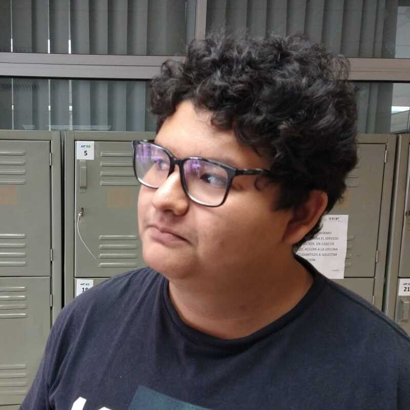

Portafolio de UX: César Eduardo Martínez Ibarra
Aquí se aprecia mi portafolo de Diseño de UX

Bienvenid@ seas a mi portafolio de UX, aquí se puede apreciar los trabajos que he realizado con el paso del tiempo, además se hace notar mi experiencia en el campo del diseño de UX, y se muestra también los recientes proyectos en los que he trabajado como diseñador de UX
Soy estudiante de la Universidad Politécnica de Ciudad Victoria, Tamaulipas, México. Me encuentro estudiando el programa académico de la Ingeniería en Tecnologías de la Información.
Tengo habilidades en competencias digitales en Google, gestión de proyectos de Google, rapid developer en Mendix, programación de Arduino y Raspberry, ideación de proyectos de Robótica, programación FronEnd y BackEnd.
Se enlistan los siguientes casos de estudio con respecto al desarrollo de UX:
GenScriMySQL GenScriMySQLWeb Remindeame2230037@upv.edu.mx